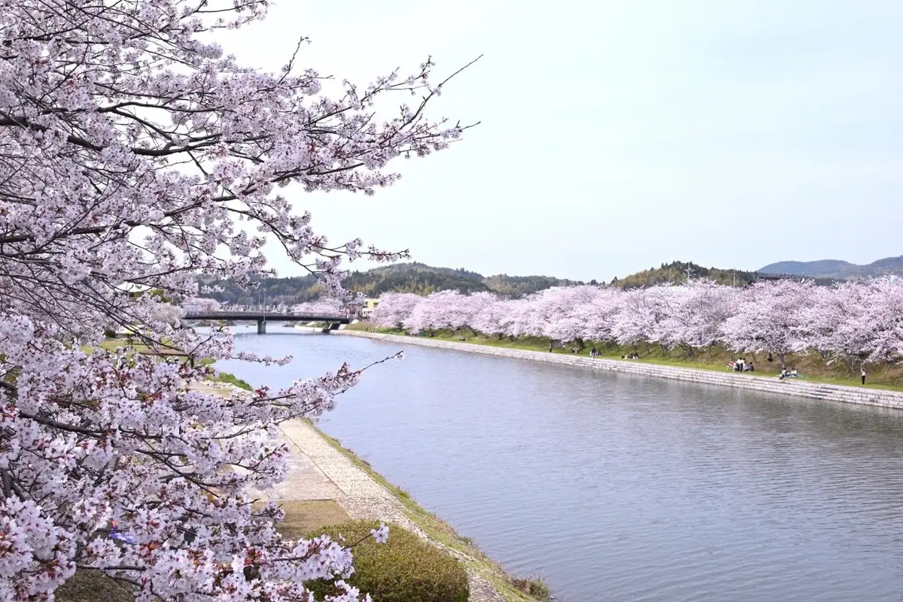
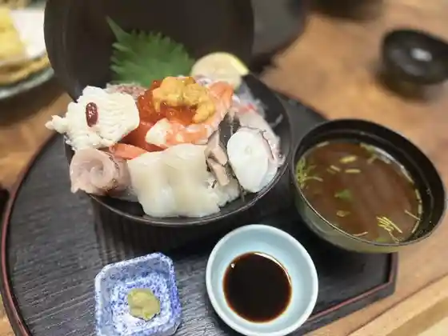
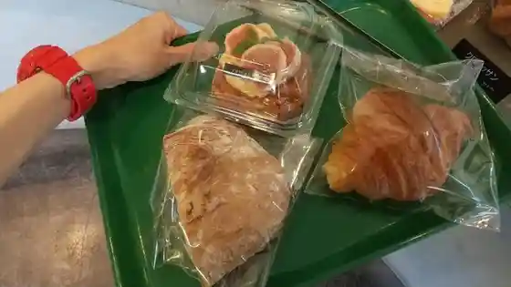
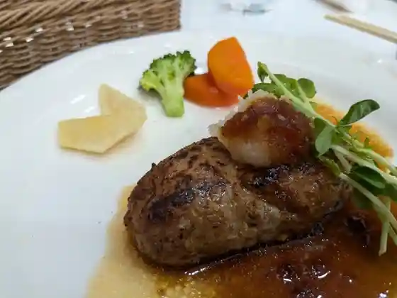
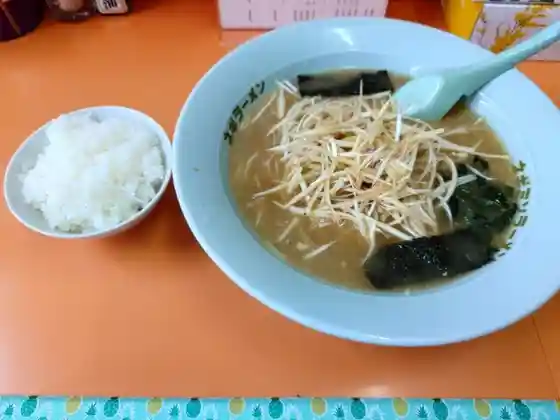
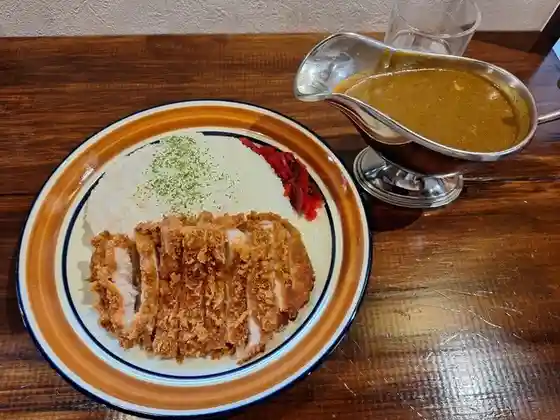
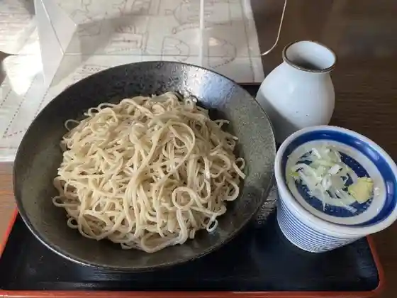
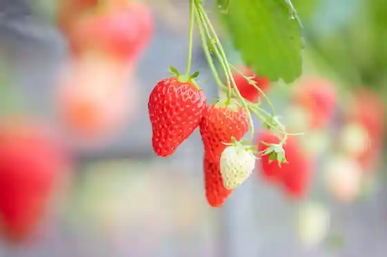
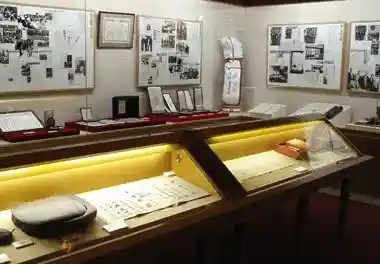
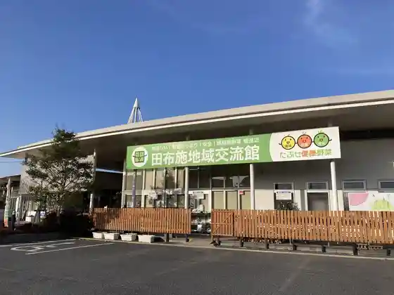

Tabuse
Tabuse · Yamaguchi
Tabuse
Highlighted on the Yamaguchi map.

Dining
寿司満
Sushi Man

克 本店
Katsu Honten

美味しいパンの店 Yamaguchi
Yamaguchi

フランス食堂
Furansu Shokudo
レザンジュ
Rezanju
田舎もち本舗 たけした
Inaka Mochi Honpo Takeshita

ラーメンショップ 田布施店
Raamenshoppu Tabuse Mise

カレーのランプ
Karee No Ranpu

蕎麦もりもと
Soba Morimoto
まーちゃん
Maachan
喫茶 望
Kissa Bou
sakura michi
sakura michi
とうふ処 豆吉
Toufu Tokoro Mame Kichi
大好き昭和亭
Daisuki Shouwa Tei
ベリー ベリー
Berii Berii
かんべ 本店
Kanbe Honten
OCHIAI
OCHIAI
ゴルマール
Gorumaaru
焼八
Yaki Hachi
トルコノ
Torukono
田布施地域交流館
Tabuse Chiiki Kouryuu Kan
TAMS
TAMS
お好み亭和っこ
O Konomi Tei Watsu Ko
レールウェイズ クラブ
Reeruueizu Kurabu
にこにこパーク小行司
Nikoniko Paaku Shou Gyouji
キャベツさんお好み焼き
Kyabetsu San'o Konomi Yaki
和居2
Wa Kyo 2
mama relief
mama relief
クヒオ カフェ
Kuhio Kafe
やのくにアンテナショップのそ
Yanokuni Antenashoppu Noso
きら煌めき 販売所
Kira Kou Meki Hanbaijo
wakka
wakka
ツバメ舎
Tsubame Sha
きら煌めき
Kira Kou Meki
鮓蔵
Kurage Kura
藤本 弁当仕出し
Fujimoto Bentou Shidashi
スイートメモリー
Suiitomemorii
マルキュウ 田布施店
Marukyuu Tabuse Mise
伊藤水産の牡蠣小屋
Itou Suisan No Kaki Koya
ほりを
Horiwo
割烹ほりを
Kappou Horiwo
かき小屋
Kaki Koya
LAWSON 田布施波野店
LAWSON
友末旅館
Tomosue Ryokan
食通の店 煌
Shokutsuu No Mise Kou
ポポロ
Poporo
ぱう
Pau
オアシス
Oashisu
居酒屋ムタ
Izakaya Muta
空のしずく
Sora Noshizuku
喜多田
Kita Ta
Caf e Berry Berry
Caf e Berry Berry
Tofudokoro Mamekichi
Tofudokoro Mamekichi
French Dining
French Dining
Ramen Shop Tabuse
Ramen Shop Tabuse
Sushi Kura
Sushi Kura
Wayu
Wayu
Karaoke Cafe Mie
Karaoke Cafe Mie
Ristorante Nakata
Ristorante Nakata
Hoshinoya
Hoshinoya
Orange Shower Casual Restaurant
Orange Shower Casual Restaurant
Cabbage Sanokonomiyaki
Cabbage Sanokonomiyaki
Narumi Robatayaki
Narumi Robatayaki
Farmland
Farmland
Bar le Lahaina
Bar le Lahaina
Kitada
Kitada
Sonobe
Sonobe
Folk Sakaba Donjarahoi
Folk Sakaba Donjarahoi
Matsu
Matsu
Sights
Tabuse no Ichigo Kari

Majima

Tabuse Kawa Sakura Namiki
Tabuse Kyodo Kan / Kishi Sato Kyodai Saisho no Ihin Tenjishitsu

Tabuse Chiiki Koryu Kan

Furusato Shijo Park
Nochi I Burial Mound
no Mbirando Umashima
Ryusen Tera Romon to Tarayo
Taga Sha
Kunimori Burial Mound
Senpuku Tera
Takamatsu Hachiman Shrine
Tominaga Yurin no Kyutaku Atochi
Ki no Iyama Burial Mound
Sho Gyoji no Gifucho
Tennobara Burial Mound
Inariyama Burial Mound
no Kurahara Burial Mound
Onami Nogami Mai
Haze no Kyoju
Mokuzo Jizo Bosatsu Zazo (Renge Tera)
Ishi So Yama Burial Mound
Kimin no Kuyo to (Daion Tera)
Tominaga Yurin no Hi
Tabuse Town Hall